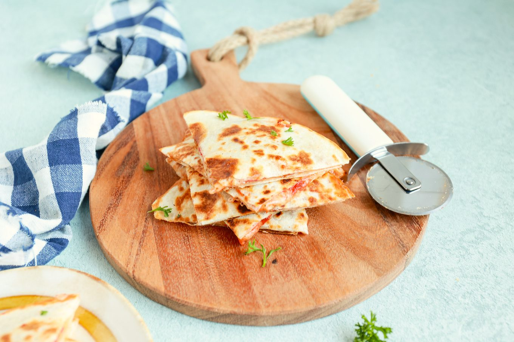

Pizza Quesadilla

Ingredienten
- 4 wraps
- pizzasaus
- geraspte mozzeralla
- salami
- 4 tl italiaanse kruiden
- evt restjes groenten uit de koelkast
Bereiding
- Smeer de wraps in met een laagje pizzasaus.
- Verdeel hierover de Italiaanse kruiden, paar plakes salami en wat geraspte mozzarella.
- Heb je nog wat restjes groenten in de koelkast liggen waar je vanaf moet? Voeg dat gerust toe.
- Vouw vervolgens de wraps dubbel of leg een ‘lege wrap’ bovenop de wrap met beleg. Doe een klein scheutje olie in een koekenpan en bak de wraps ongeveer 3-4 minuten per kant goudbruin en krokant.
- Snijd de quesadilla in punten en serveer eventueel met een beetje extra opgewarmde pizzasaus in een bakje om in te dippen. Eet smakelijk!